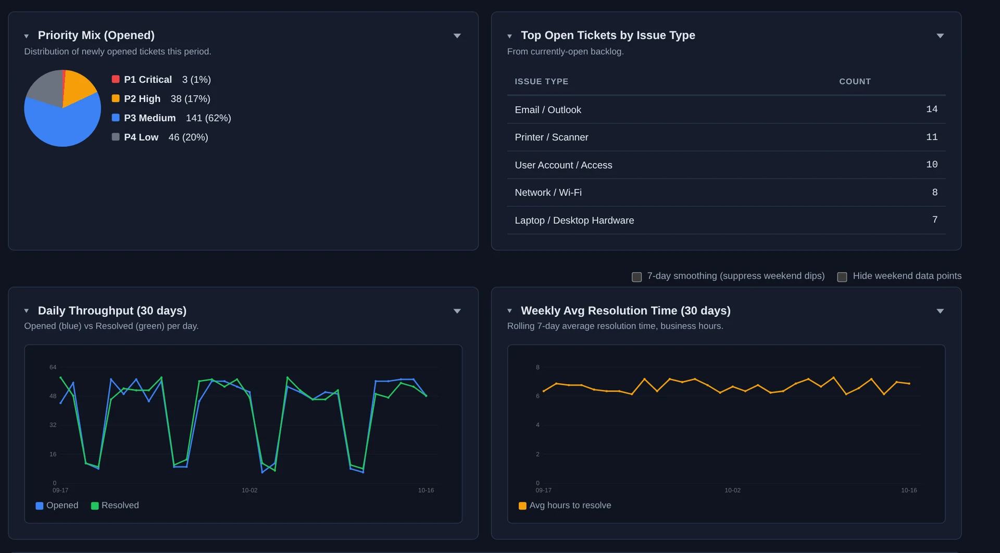

Nova turns your ticket, time and feedback data into reports for every audience — a scorecard for the service manager, financial views for the owner, and a monthly review your clients can open themselves.

Throughput, backlog, aging, SLA performance and resolution trends for any period, with weekly and monthly views.
An operations dashboard, a service snapshot, queue health and dispatch analytics, for the day-to-day picture.
CSAT with comments and trends, per-client monthly reports, and account health across your client base.
SmartNumbers (key business numbers at a glance), a financial executive view, client effective rate and labor allocation.
Ticket time review, reports on which tickets techs took or passed on, and QA results by tech.
How often your team agrees with the AI, the corrections it has learned, and what it costs to run.
Each month Nova drafts a short service review for every contracted client — tickets, response, satisfaction and what stood out — with a plain-language summary written by AI. You can preview and refresh it, and clients can open it in their portal.
In the demo we'll walk through the scorecard and a client review built from tickets like yours.